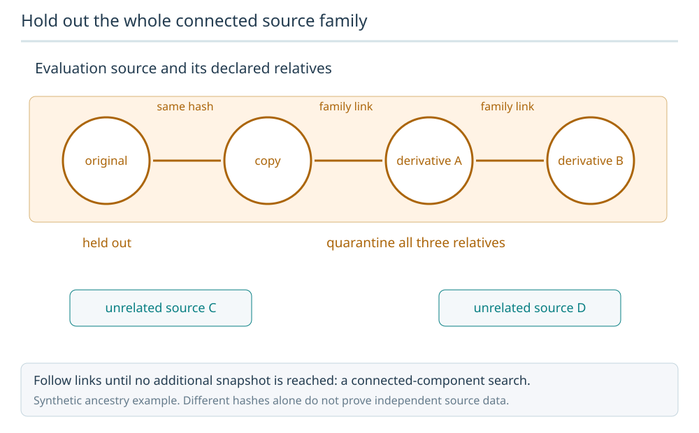
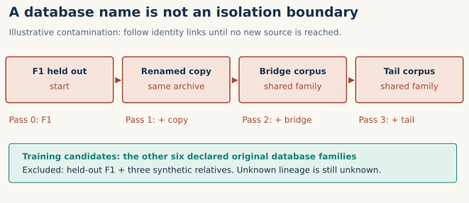
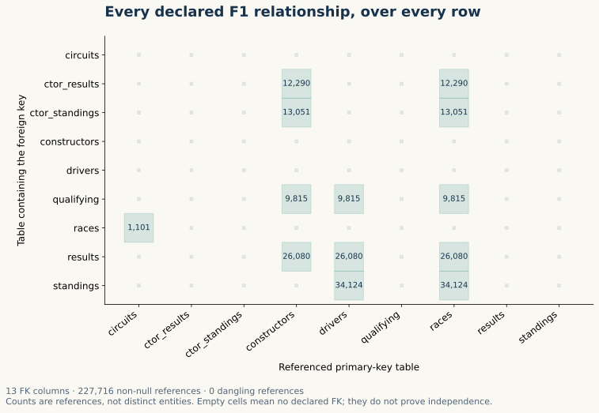
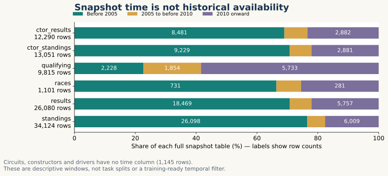

Year 5 · Quarter 2 · Lesson 171
Corpus of databases
Your task: build a corpus manifest that lets another person reconstruct which databases could enter pretraining—and explain why a held-out database stayed out.
Reading route. Read §§1–4 for the core idea (about 20 minutes). Then inspect the measured audit and complete the notebook in a separate practice session. The optional full report exposes every table and key check.
Recall first. A database contains tables linked by keys. A primary key identifies a row within a table. A foreign key refers to a primary key in another table. A query cutoff is the moment at which a prediction must be made; information arriving later cannot support that prediction.
1 · From a model design to a corpus contract¶
Lesson 170 asked you to defend a relational foundation-model design. It left a practical question open: which databases is the model allowed to learn from? A model can pass a prediction benchmark while having already seen the evaluation database during pretraining. The corpus contract must come before the first training batch.
A corpus is the collection of database snapshots selected for training. A snapshot is one recorded version of a database. A manifest is a machine-readable inventory of those versions and the rules governing their use. Provenance records where a snapshot came from and how it was transformed. It lets someone challenge a claim such as “this database was unseen.”
In plain terms. A list of download URLs is a shopping list. A corpus manifest is a receipt plus an inclusion rule.
Our mission is to test whether relational learning adds value. An undocumented overlap between training and evaluation can make that value look larger than it is. RelBench motivates evaluation across relational databases; Griffin makes the pretraining collection consequential for transfer. This lesson builds the data contract, not a new predictor.
2 · Freeze identities before counting diversity¶
Use one record per database snapshot. Keep the database name, source-family identifiers, archive hash, source-code hash, declared table schema, time boundaries and audit scope together.
A source family groups versions or derivatives of the same underlying source. Renaming a copy of a racing database does not create a second independent domain. A SHA256 hash is a fingerprint of exact bytes: matching hashes identify byte-identical archives. Different hashes do not establish different underlying data; a re-export or small edit changes the hash.
| Manifest field | What it answers | What it does not establish |
|---|---|---|
| Database + source families | What identity and known ancestry were declared? | All undisclosed ancestry |
| Archive SHA256 | Are these the same bytes? | Independence when hashes differ |
| Source hash + schema | Which code declares tables, keys and times? | Whether unseen data obey those declarations |
| Time boundaries | What clocks and cutoff conventions are specified? | When a historical user could actually see a value |
| Row audit + rights review | What was checked and what remains? | Automatic permission or training eligibility |
Our fixed scope. The notebook pins the installed RelBench 1.1.0 source bytes for the seven original databases. This is an explicit historical release choice; the current RelBench project has expanded. We do not silently replace the lesson's corpus with today's registry.
The source-family field starts with one curator-declared family per original database. That is a usable inventory assumption, not proof that all ancestry is known. Record newly discovered shared sources and regenerate the split. Dataset usage rights remain REVIEW_REQUIRED: a software-package license does not by itself settle every source dataset's terms.
| Database | Declared tables | FK columns | Row evidence |
|---|---|---|---|
| rel-amazon | 3 | 2 | Source inventory only |
| rel-avito | 8 | 11 | Source inventory only |
| rel-event | 5 | 7 | Source inventory only |
| rel-f1 | 9 | 13 | Complete F1 snapshot |
| rel-hm | 3 | 2 | Source inventory only |
| rel-stack | 7 | 12 | Source inventory only |
| rel-trial | 15 | 15 | Source inventory only |
These are counts of source-declared tables and foreign-key columns. Only F1 receives the full row audit below. There is no claim that all seven archives were downloaded or that all seven are ready for training.
3 · Hold out a source family, not just a name¶
Database-level holdout means reserving a whole database for evaluation. A random row split within one database asks a different question: can the model predict additional rows from a familiar source? It cannot establish transfer to a new database.
Worked example. Suppose race-original is held out. race-copy has an identical archive hash. A third corpus shares a declared family with the copy, and a fourth shares a family with that third corpus. Excluding just the original name leaves three relatives in training.
Treat each snapshot as a node. Link two nodes when their declared source families overlap or their archive hashes match. Starting at the held-out node, repeatedly follow links until no new node is reached. This set is its connected component. The held-out database stays in evaluation; its other component members go into quarantine, meaning excluded from training pending a provenance decision.
Hold out the whole connected source family
The held-out original shares a hash with a copy. Declared family links connect that copy to two more derivatives. Following all links quarantines the entire component from pretraining.

Predict: Can the last derivative stay in training because it has no direct link to the original?
No under this conservative policy. Transitive links place it in the same component. The manifest only protects against ancestry that has been recorded.
Answer: No under this conservative policy. Transitive links place it in the same component. The manifest only protects against ancestry that has been recorded.



The other component members need not contain the same rows. Quarantining the entire component is a deliberately conservative policy for source isolation; it may exclude more than a narrower row-overlap policy. It protects only against links represented in the manifest.
Try it. Choose each of the seven held-out databases. In the clean declared inventory, six remain training candidates. Turn on the clearly synthetic copy-and-bridge intervention. Three additional records must be quarantined, although two are not directly linked to the original. The baseline remains visible. None of these fictional records is evidence of contamination in actual RelBench.
# Worked integrity example; full implementation is visible in the notebook.
parents = {10, 20}
children = [10, 10, None, 99]
missing = sum(x is None for x in children)
dangling = sum(x is not None and x not in parents for x in children)
assert (missing, dangling) == (1, 1)
The notebook makes you implement the full validation and connected-component rule. Its final report calls your functions, including the deliberate alias cases; a hard-coded “six training databases” will fail.
4 · A valid relationship is not an available fact¶
A referential-integrity audit checks whether every non-null foreign key points to an existing primary key. An orphan, or dangling reference, points nowhere. Null foreign keys are counted separately: a missing optional relationship differs from a broken non-null relationship.
Worked example. Parent IDs are [10, 20]; child references are [10, 10, null, 99]. There are four rows, three non-null references, one missing reference and one dangling reference. The repeated 10 is valid: multiple child rows may refer to the same parent. Repeated primary keys would make row identity ambiguous.


Measured scope. We audit the complete cached F1 archive, matching its SHA256 to the pinned registry and matching every extracted table byte to the archive. We bypass the loader's time filtering for this audit so that nothing in the snapshot is silently omitted. Source-declared keys and Parquet metadata agree for all nine tables. The pinned loader source and table source expose filtering and metadata semantics.
| Table | Rows | PK nulls / duplicate excess | Time column |
|---|---|---|---|
| circuits | 77 | 0 / 0 | None |
| constructor_results | 12,290 | 0 / 0 | date |
| constructor_standings | 13,051 | 0 / 0 | date |
| constructors | 211 | 0 / 0 | None |
| drivers | 857 | 0 / 0 | None |
| qualifying | 9,815 | 0 / 0 | date |
| races | 1,101 | 0 / 0 | date |
| results | 26,080 | 0 / 0 | date |
| standings | 34,124 | 0 / 0 | date |
Across 227,716 non-null FK references: 0 dangling, 0 null FK values. This is measured archive integrity; historical availability remains unestablished.
A clean key audit does not say a value was available at a prediction cutoff. Event time records when something happened. Availability time records when the information could be used. A later update to an old event can have an early event date. A static table without a time column has no row-level clock to prove historical availability.


The source defines F1 validation and test boundaries as 2005-01-01 and 2010-01-01. Our descriptive windows are date < 2005, 2005 ≤ date < 2010, and date ≥ 2010. These are snapshot row counts, not task-label train/validation/test splits. The full archive includes later records; that is expected for a stored snapshot, but feeding them to an earlier query would require an explicit information policy. The archive audit does not implement a point-in-time training sampler.
Circuits, constructors and drivers contribute 1,145 rows without a time column. They stay in the inventory and retain availability=NOT_ESTABLISHED. Do not invent an old timestamp to make them pass. A later training pipeline must separately specify feature availability, label readiness and the cutoff propagated through joins.
5 · What the complete execution establishes¶
Named execution: L171 RelBench Corpus and Holdout Audit. Fixed: seven pinned source definitions and one complete F1 archive. Varied: which database is held out, plus clearly marked synthetic identity contamination. Measured: source inventory completeness, split membership, all F1 key checks and descriptive time counts. No model is fitted.
| Evidence | Status and precise meaning |
|---|---|
| Seven-source inventory | Complete for the declared release scope |
| Seven database holdouts | Pass for declared lineage; each clean split has six candidates |
| F1 snapshot | All 97,606 rows, nine tables and 13 FK columns audited |
| Other six row audits | NOT_RUN; source declarations are not observed rows |
| Historical identity and availability | NOT_ESTABLISHED |
| Foundation-model pretraining / whole-paper reproduction | NOT_RUN |
| Transfer advantage | NOT_ESTABLISHED; no predictive experiment here |
| Learner defense | PENDING_WRITTEN_DEFENSE |
This is the complete approved corpus audit, not a reproduction of a paper's training result. “Complete” names the finite audited scope. It does not expand the evidence to missing databases, hidden lineage or downstream accuracy.
Compute contract: $0 new cloud/API spend; 1,800-second aggregate local audit/check/notebook limit, including failed attempts. The command wrapper stops at the limit and retains the attempt ledger. Browser, authoring and publication-build work are separate delivery checks. Protocol and exact commands · Corpus manifest · Full report.
6 · Lab: make the corpus contract executable¶
Student notebook · Prepared notebook with reference outputs · Quick reference.
- Validate the manifest: reject missing lineage declarations, malformed hashes and duplicate database identities.
- Implement source-family/identical-archive exclusion, including the two-hop bridge.
- Audit the full F1 snapshot: primary-key nulls and duplicates, foreign-key orphans and nulls, and time windows. Independent checks challenge the same functions used in your final report.
- Write a corpus card naming an evaluation holdout, training candidates, quarantined relatives, unverified lineage and the next evidence needed before pretraining.
The portable notebook includes exact source snapshots and the complete small F1 archive. It recomputes the report from those bytes. Synthetic checks isolate errors; they never stand in for real rows. PROVIDED means run the supplied scaffolding; TODO means implement the named behavior; CHECK gives immediate feedback; EXIT asks for your interpretation.
Exit standard: code checks pass and your defense explains (a) why different archive hashes cannot prove source independence, (b) why the bridge is quarantined, and (c) why clean foreign keys cannot establish historical availability. Submit the corpus card and report for teacher review. Execution alone does not establish learner mastery.
Next: Lesson 172 turns table and column declarations into schema tokens. Keep corpus identity separate from token identity: changing a database's token spelling must not create a new held-out source.
Primary reading: RelBench, Robinson et al., 2024, the benchmark construction and dataset descriptions. Read alongside the pinned source inventory rather than borrowing unverified dataset counts from a different release. Ask the teacher any follow-up question, especially about an exclusion you think is too conservative.